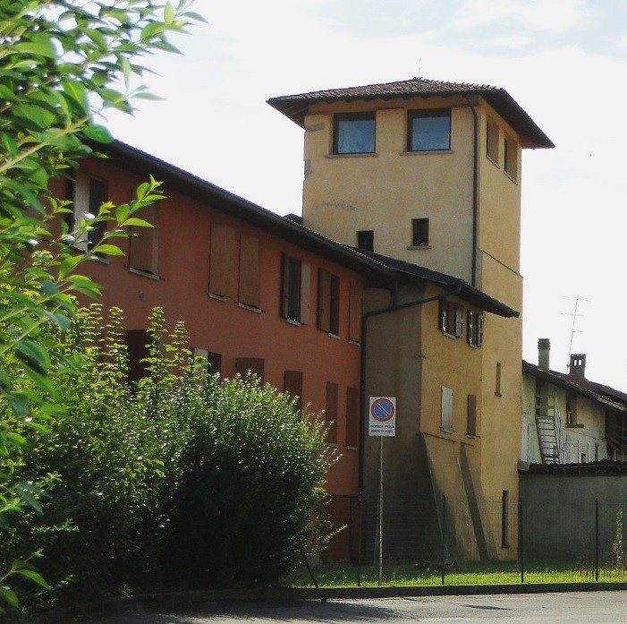
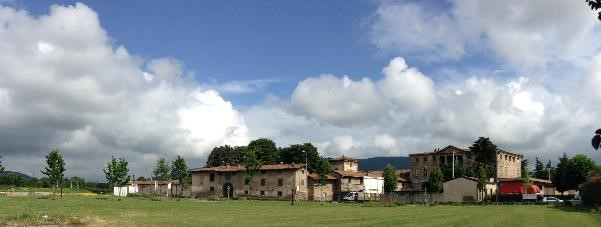

La chiesa parrocchiale di Campagnola con il Torrente Morla

Via dei Prati a Campagnola, antica strada poderale che collegava il castello con i campi

Grumello del Piano: la torre un tempo utilizzata a scopi difensivi, oggi adibita ad abitazione

La roggia Morlana in località Daste

Cascina Baj, situata nella parte nord orientale della città, costituisce un esempio di villa patronale usata sia come luogo di villeggiatura che come centro di organizzazione agricola

Cascina Spalenga: case in borlanti sulla roggia Morlana lungo la quale sorgevano numerosi luoghi del lavoro (magli, mulini)
1- Strutturazione amministrativa: la corona dei Corpi Santi ha mantenuto nel tempo una relazione dialettica con la città. Essi seppure siano stati autonomi solo per brevi periodi, non sono mai stati inclusi all’interno delle mura cittadine. Durante il dominio della Repubblica di Venezia (1428-1797) il comune di Bergamo era costituito da Città Alta, i Borghi, le Vicinie urbane e le contrade dei Corpi Santi. L’amministrazione di questi ultimi era formata dal Consiglio generale, costituito dai capofamiglia; il Consiglio eleggeva uno o più sindaci, un ufficiale addetto alla notifica degli atti e gli impiegati necessari al disbrigo delle pratiche locali. I Corpi Santi provvedevano autonomamente alla soluzione di alcuni problemi locali, quali la manutenzione e la pulizia delle strade, l’illuminazione notturna o l’assistenza ai bisognosi. Con un decreto napoleonico del 1805 il comune di Bergamo assunse la competenza su tutto il territorio cittadino, ad esclusione di otto contrade dei Corpi Santi (Colognola, Campagnola, Curnasco, Grumello, Lallio, Redona, Torre Boldone, Valtesse) che rimasero comuni autonomi fino al 1809, quando un nuovo decreto li riaccorpò al comune di Bergamo. Nel 1816 il Governo Austriaco ristabilì l’autonomia dei Corpi Santi. Questi rimasero indipendenti fino ai primi decenni del Novecento quando Colognola, Grumello, Redona, Valtesse vennero riaccorpati al capoluogo. Mantenendo la propria autonomia i Corpi Santi non hanno mai svolto il ruolo di periferia – inteso in senso comune – per Bergamo conservando la propria identità.
2-Paesaggio agrario: il paesaggio dei Corpi Santi si presenta cadenzato da terreni agricoli punteggiati da orti, ville e borghi che si distingue da quello presente sia sui colli – a nord della città – punteggiato da numerosi terrazzamenti, sia da quello delle aree del contado circostante, in cui predomina l’agricoltura estensiva. Nel passato, l’area si caratterizzava per una funzione agricola specializzata nella produzione di ortaggi destinati alla città. Tale specializzazione era resa possibile dalla presenza di terreni sciolti umidi e dalla capacità/possibilità di deviare le numerose rogge che attraversavano o lambivano la città aumentandone la fertilità. I Corpi Santi, quindi, non sono importanti solo per il ruolo amministrativo che hanno svolto nel tempo, ma anche e soprattutto per gli specifici processi ed esiti territoriali che si sono in essi sviluppati (Ferlinghetti, 2012). Si tratta di un paesaggio la cui importanza è oggi in parte recuperata dalle cooperative sociali che svolgono funzioni di divulgazione sui saperi orticoli e sul ruolo dell’orto come attività pedagogica, ma che necessita di politiche conservative e di valorizzazione.
3- Funzione industriale/manifatturiera: grazie alla presenza di numerose rogge, questa cintura di borghi attorno al centro urbano concentrava varie attività che sfruttavano la forza motrice dell’acqua: magli, opifici, mulini, segherie…. Queste attività destinate alla città, ma anche al contado, erano specifiche dei Corpi Santi. In particolare, nella prima fase di industrializzazione del territorio di Bergamo che risale agli anni Venti dell’800, quando decollò la produzione del cotone che seguiva la crisi dei lanifici e dei setifici (1816-19), le strutture produttive si diffusero capillarmente nei borghi e ancora più all’esterno delle mura alla ricerca di più favorevoli condizioni localizzative. Queste trovarono il luogo ideale per il proprio sviluppo nei Corpi Santi, lungo i corsi d’acqua periferici (Roggia Serio, Roggia Nuova, Roggia Morlana), dove si riscontrava una concentrazione di magli del ferro e del rame, folli per la produzione di carta e, appunto, i primi cotonifici (Scalvini, Calza, Finardi, 1987). Il reticolo idrografico ebbe importanza anche per la creazione delle strutture industriali del Gres, non solo con la costruzione degli attuali edifici, ma anche per la presenza – documentata dal catasto austriaco del 1853 – di un opificio lungo la Roggia Morlana nelle immediate vicinanze dello stabilimento. Altre testimonianze del passato industriale di questi borghi sono oggi visibili lungo la Roggia Morlana nel Corpo Santo di Daste, a nord est della città, dove ritroviamo gli edifici dismessi dell’ex Industria Riuniti Filati (IRF), attiva dal 1890 fino al 1955, divenuta successivamente un cotonificio (cotoni Albini) e di una importante centrale elettrica, che nel passato distribuiva energia a tutta la zona e a buona parte della città. Ad oggi l’edificio della centrale elettrica è stato recuperato ma è privo di una destinazione d’uso.
4- Funzionalità residenziale: oltre ai borghi erano presenti anche numerose ville padronali che costituivano sia luogo di villeggiatura per i nobili, che centri dirigenziali dell’organizzazione del lavoro agricolo. Le ville localizzate in prossimità del rilievo collinare avevano architettura modesta e assolvevano generalmente alla funzione di residenza temporanea; quelle poste nella pianura, al contrario, erano ampie e costituivano vere e proprie strutture residenziali oltre che rurali. Ad esse vanno aggiunte i numerosi oratori e le chiese campestri che punteggiano ancor oggi il paesaggio. Dunque la corona dei Corpi Santi veniva a costituire una struttura residenziale ed abitativa complessa descritta da Maironi da Ponte nei primi dell’Ottocento come "luoghi di delizie o ameni ritiri" (Ferlinghetti, 2012). Gran parte di tale patrimonio culturale e naturale si è conservato.
5- Trama architettonica: i borlanti. Infine, pur non soffermandosi sulle strutture (matrici) insediative, sulle loro specificità, sulle loro figure tipiche e sulla loro capacità di attualizzarsi, per dare una risposta contemporanea adeguata alle questioni territoriali che le riguardano, va sottolineato che i Corpi Santi presentano una particolarità architettonica costituita dai materiali locali utilizzati, come i borlanti, sassi di fiume che differenziano l’architettura di questi borghi rispetto a Città Alta, costruita viceversa in pietra. Per questa ragione, l’area non presenta solo un significativo patrimonio naturalistico costituito da prati, cortine arboree, fossi, aree umide, ecc..., ma anche "paesaggi minimi" (muri in pietra e borlanti, selciati, rovari o murere, manufatti legati al governo delle acque, siepi, ecc...). Nello specifico, tale termine identifica tutte le piccole testimonianze della sinergia uomo-ambiente inserite in contesti ad elevata antropizzazione con valore storico-paesaggistico, frutto della trasformazione umana in stretto collegamento con il contesto tradizionale (Ferlinghetti, Ruggeri, 2010). Questi elementi naturali concorrono a salvaguardare la biodiversità e il volto tradizionale dei luoghi.

La tenuta della Cascina Baj

Ciminiera nella piazza antistante la centrale elettrica di Daste

Boccaleone, situato nella parte orientale della città, permette di cogliere la polifunzionalità urbana, data la presenza di campi, in funzione della città
La tenuta della Cascina Baj
Ciminiera nella piazza antistante la centrale elettrica di Daste
Boccaleone, situato nella parte orientale della città, permette di cogliere la polifunzionalità urbana, data la presenza di campi, in funzione della città